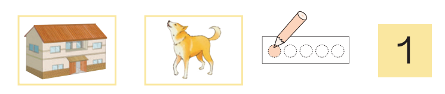
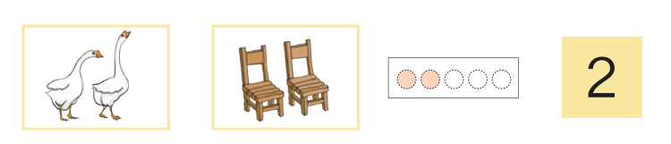
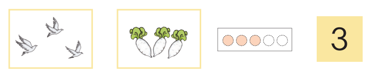
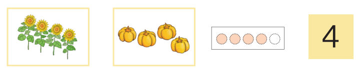
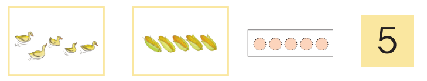
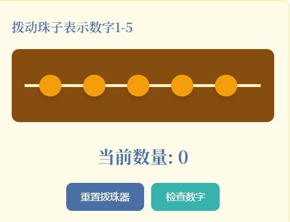
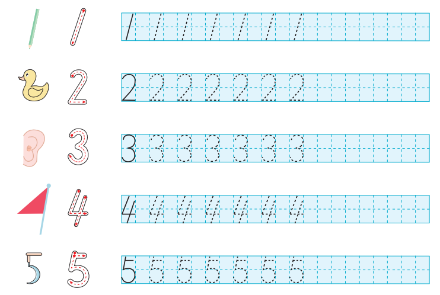
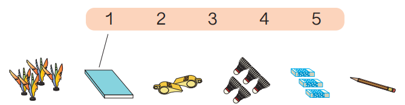
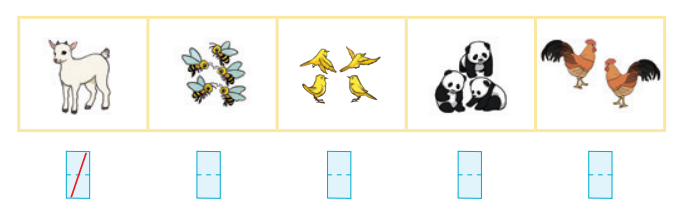

本节内容是在小学一年级上册数学课程中"1~5的认识"部分的内容，旨在帮助学生初步认识1到5的数字及其对应的数量关系。教材通过具体的事物，如一栋房屋、一只狗、两只鹅、两个椅子等，形象地展示了1到5的数量概念。学生通过拨一拨、数一数、描一描、写一写等活动，逐步掌握数字1到5的书写和数量对应关系。此外，教材还设计了圈一圈、连一连、数一数、写一写等练习，帮助学生巩固所学内容，并通过实际操作和观察，进一步理解数字与数量的关系。通过这些活动，学生不仅能够认识和书写1到5的数字，还能在生活中识别和应用这些数字，培养初步的数感和数学思维能力。
一
教学内容分析
二
学情分析
学生基础
在学习本节课之前，学生已经具备了一定的数感，能够识别和理解1到5的基本概念，并能在日常生活中识别和数数简单的物体数量。学生对数字的基本形态和书写方法有初步的了解，能够通过观察和模仿进行简单的数字书写练习。
当前不足
学生在认识和理解1到5的数量时，可能会遇到一些困难。例如，学生可能会混淆数字的顺序，或者在数数时出现遗漏或重复的情况。此外，学生在书写数字时，可能会出现笔画不规范或方向错误的问题。对于一些抽象的数量概念，学生可能需要更多的实际操作和练习来加深理解。
学习策略
1.通过多种感官参与的教学活动，如拨一拨、数一数、描一描、写一写等，帮助学生在实际操作中加深对数字的理解。
2.利用生活中的实物和图片进行教学，让学生通过观察和比较，理解数字与数量之间的关系。
3.设计有趣的数学游戏和练习，如圈一圈、连一连等，激发学生的学习兴趣，帮助他们巩固所学知识。
4.提供个性化的指导和帮助，根据学生的不同学习情况，给予针对性的练习和反馈，帮助他们克服学习中的困难。
个性化特点
本班学生在学习态度和基础知识掌握方面存在一定的差异。有些学生对数字的认识和书写非常熟练，能够快速准确地完成相关练习；而另一些学生则在数数和书写方面存在一定的困难，需要更多的练习和指导。在学习态度上，大多数学生对数学学习表现出浓厚的兴趣和积极的参与态度，但也有少数学生在学习过程中容易分心，注意力不够集中。教师应注意到这些差异，在教学过程中提供个性化的指导和帮助，以满足不同层次学生的需求，促进每一位学生的全面发展。
三
教学目标
1. 通过观察和数数生活中的事物，初步认识1到5的数字，理解数字与数量之间的关系。
2. 通过动手操作和描写数字，培养学生的动手能力和书写数字的技能。
3. 通过圈一圈、连一连等活动，增强学生对数字1到5的识别和应用能力。
4. 通过数一数、写一写等练习，提升学生的数感和对数字的敏感度。
5. 通过用自己喜欢的方式表示1到5，激发学生的创造力和对数学学习的兴趣。
四
教学重难点
教学重点
1. 通过观察和数数生活中的事物，初步认识1到5的数字，理解数字与数量之间的关系。
2. 通过动手操作和描写数字，培养学生的动手能力和书写数字的技能。
3. 通过圈一圈、连一连等活动，增强学生对数字1到5的识别和应用能力。
教学难点
1. 理解数字与数量之间的关系，特别是对于数量的准确识别和对应数字的正确书写。
2. 在实际操作中，能够准确地数出物体的数量并正确地用数字表示出来。
五
教学过程
设置问题情境，确立学习目标
5分钟
教师活动
教师通过展示图片引入情境。





师：同学们，今天我们来认识数字1到5。老师给大家带来了几张图片，请大家仔细观察。图片中有一栋房屋、一只狗、两只鹅、两个椅子、三只鸟、三个萝卜、四个向日葵、四个南瓜、五个鸭子和五个玉米。你们能数一数这些事物的数量吗？
参考教学视频
学生活动
学生观察图片并回答。
预设1：学生回答："一栋房屋有1个，一只狗有1个。"
预设2：学生回答："两只鹅有2个，两个椅子有2个。"
预设3：学生回答："三只鸟有3个，三个萝卜有3个。"
预设4：学生回答："四个向日葵有4个，四个南瓜有4个。"
预设5：学生回答："五个鸭子有5个，五个玉米有5个。"
活动意图
通过观察图片中的事物数量，帮助学生初步认识数字1到5，理解数字与数量之间的关系。
效果评价
学生能够正确数出图片中事物的数量，并初步理解数字与数量的对应关系。
小组分配
5分钟
教师活动
教师将学生分成小组，并分配任务。
师：接下来，我们将进行一些有趣的活动。老师会把大家分成几个小组，每组负责完成不同的任务。比如，有的小组负责"拨一拨，数一数"，有的小组负责"描一描，写一写"，还有的小组负责"做一做"。大家准备好了吗？
学生活动
学生分组并领取任务。
预设：学生分成三组，每组领取对应的任务。
活动意图
通过分组活动，培养学生的合作意识和团队精神，同时明确任务分工。
效果评价
学生能够积极参与分组，并清楚自己的任务。
拨一拨，数一数
10分钟
教师活动
教师指导学生进行拨数活动。

拨珠器示例图
拨珠器操作示例视频
师：现在请第一组的同学拿出拨珠器，拨动珠子来表示数字1到5。拨完后，请大家数一数拨出的珠子数量，并说出对应的数字。
参考教学视频
学生活动
学生拨动珠子并数数。
预设1：学生拨动1颗珠子并说："这是数字1。"
预设2：学生拨动2颗珠子并说："这是数字2。"
预设3：学生拨动3颗珠子并说："这是数字3。"
预设4：学生拨动4颗珠子并说："这是数字4。"
预设5：学生拨动5颗珠子并说："这是数字5。"
活动意图
通过拨珠器的操作，帮助学生理解数字与数量的关系，培养动手能力。
效果评价
学生能够正确拨动珠子并数出对应的数量。
描一描，写一写
10分钟
教师活动
教师指导学生进行数字描写练习。

师：第二组的同学，请拿出练习纸和铅笔，按照老师的示范，描一描数字1到5。描完后，请大家试着自己写一写这些数字。
参考教学视频
学生活动
学生描写并书写数字。
预设1：学生描写数字1并尝试书写。
预设2：学生描写数字2并尝试书写。
预设3：学生描写数字3并尝试书写。
预设4：学生描写数字4并尝试书写。
预设5：学生描写数字5并尝试书写。
活动意图
通过描写和书写练习，培养学生的书写技能和对数字的熟悉度。
效果评价
学生能够正确描写和书写数字1到5。
做一做
8分钟
①照样子圈一圈
教师活动
教师指导学生完成圈一圈的练习。
师：第三组的同学，请看练习纸上的图片，按照示例圈出对应数量的事物。例如，圈出1个毽子、2个哨子、3个橡皮、4个鸟、5个羽毛球。
学生活动
学生完成圈一圈的练习。
预设：学生圈出对应数量的事物。
活动意图
通过圈一圈的活动，增强学生对数字与数量的识别能力。
效果评价
学生能够正确完成圈一圈的练习。
②连一连
教师活动
教师指导学生完成连一连的练习。

师：请大家看练习纸上的数字和事物图片，按照数量将数字与对应的事物连起来。例如，数字1连到一本书，数字2连到两个哨子，数字3连到三个橡皮，数字4连到四个毽子，数字5连到五个羽毛球。
拓展练习题目
学生活动
学生完成连一连的练习。
预设：学生正确连线数字与对应的事物。
活动意图
通过连一连的活动，帮助学生巩固数字与数量的对应关系。
效果评价
学生能够正确完成连一连的练习。
③数一数，写一写
教师活动
教师活动：教师指导学生完成数一数、写一写的练习。

师：请大家看练习纸上的图片，数一数图片中的事物数量，并在空格中写出对应的数字。例如，一只羊写1，五只蜜蜂写5，四只鸟写4，三个熊猫写3，两只鸡写2。
拓展练习题目
学生活动
学生完成数一数、写一写的练习。
预设：学生正确数出事物数量并写出对应的数字。
活动意图
通过数一数、写一写的活动，提升学生的数感和书写能力。
效果评价
学生能够正确完成数一数、写一写的练习。
④用自己喜欢的方式表示1、2、3、4、5
教师活动
教师活动：教师鼓励学生用创意方式表示数字。
师：最后，请大家用自己喜欢的方式表示数字1到5。可以画画、用手势、或者用其他方式来表示。
学生活动
学生用创意方式表示数字。
预设1：学生画出1个苹果、2只猫、3朵花、4颗星星、5个气球。
预设2：学生用手势表示数字1到5。
活动意图
通过创意表达活动，激发学生的创造力和对数学学习的兴趣。
效果评价
学生能够用多种方式表示数字1到5，展现创造力。
教师点评
5分钟
教师活动
教师总结学生的表现并给予鼓励。
师：今天大家表现得非常棒！通过观察、拨珠、描写、圈一圈、连一连等活动，大家已经认识了数字1到5，并理解了数字与数量的关系。老师希望大家继续保持对数学的兴趣，学会用数字表达生活中的事物。
学生活动
学生听教师点评并分享自己的感受。
预设：学生说："我觉得今天的活动很有趣，我学会了数字1到5。"
活动意图
通过教师点评，帮助学生总结学习成果，增强学习信心。
效果评价
学生能够积极回应教师点评，并表达自己的学习感受。
提交学习成果
2分钟
教师活动
教师收集学生的练习纸和创意作品。
师：现在请大家将完成的练习纸和创意作品交给老师。老师会仔细看看大家的成果，并给出反馈。
学生活动
学生提交练习纸和创意作品。
预设：学生将练习纸和作品交给老师。
活动意图
通过提交学习成果，帮助教师了解学生的学习情况。
效果评价
学生能够按时提交学习成果，展示自己的学习成果。
六
教学准备
教师准备
教材、课件、图片、拨珠器、练习纸。
学生准备
铅笔。